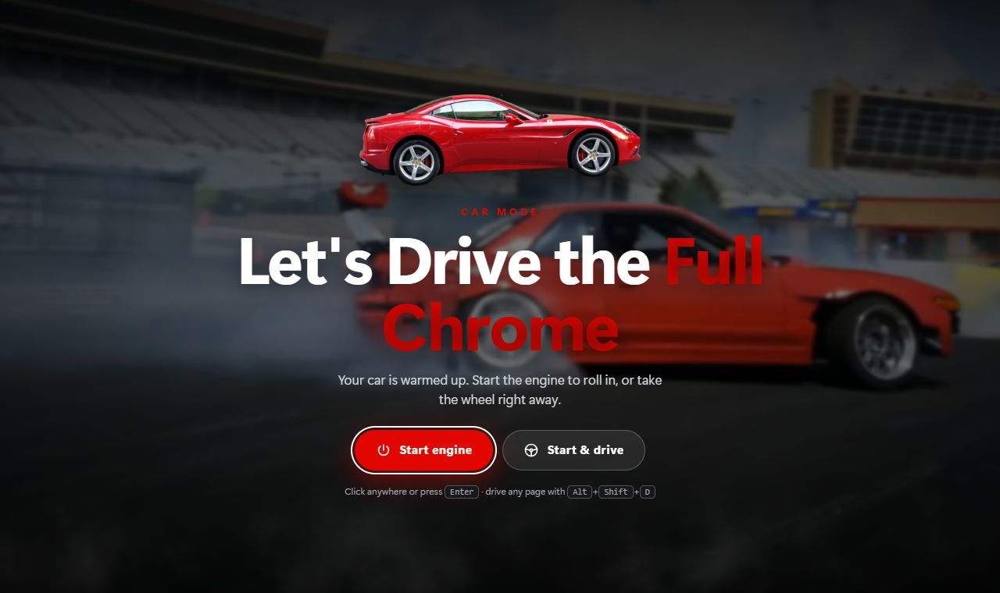
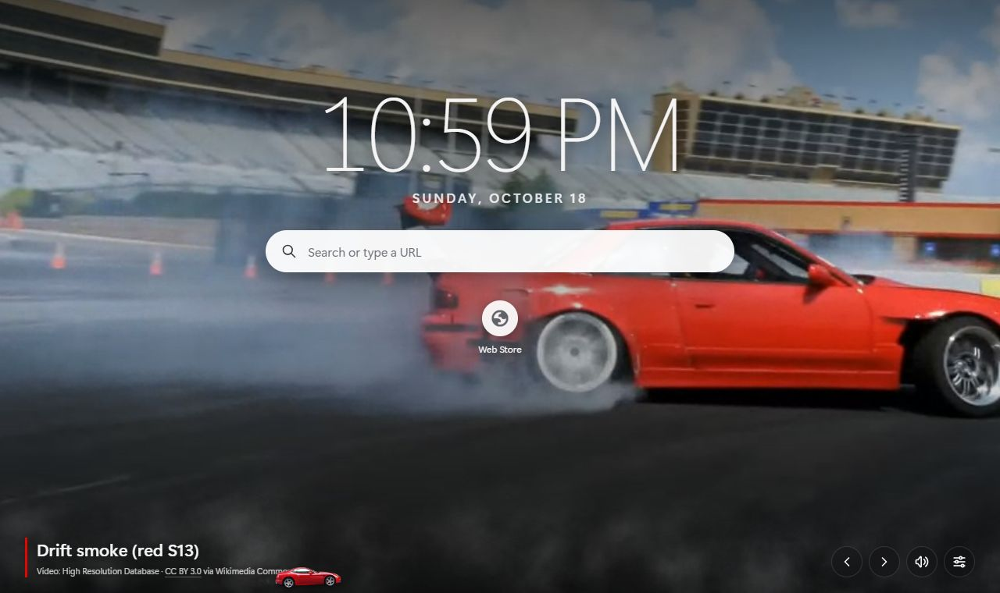
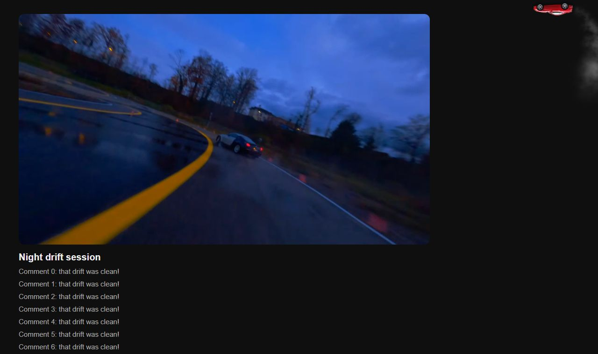
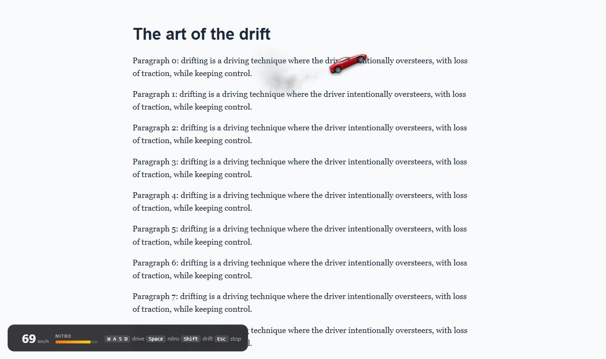
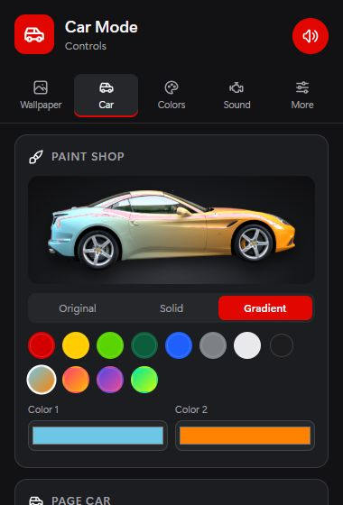
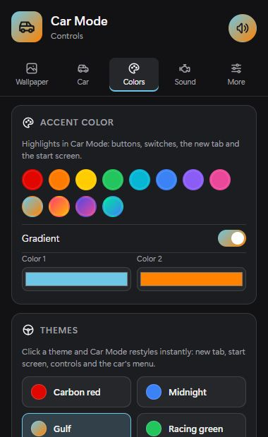

1Quick setup
- Keep the new tab. If Chrome asks "Change back to Google?", choose Keep it.
- Pin the car icon. Click the puzzle piece in Chrome's toolbar and pin Car Mode. The red car opens the controls.
- Side panel on the left (optional). Chrome Settings → Appearance → Side panel position.
2Let's drive the full Chrome
The first new tab after Chrome starts greets you with the start screen.
- Start engine, or click anywhere or press Enter: the real engine starts and the new tab rolls in.
- Start & drive does the same, then hands you the wheel right away (game mode).
Turn the start screen off under Controls › More, or bring it back with Show the start screen now.

3New tab

- Wallpapers: 2 real drift videos and 13 sports-car photos. Switch with ← → or the arrow buttons, or pick one under Controls › Wallpaper. Turn on Random car to get a different one on every tab.
- Smoke: during drifts, smoke rolls across the whole page. Set it to Off, Light or Full.
- Search & shortcuts: search the web or type a URL; your most-visited sites sit underneath.
- The photographer or filmmaker is credited at the bottom left of every wallpaper.
4The page car

A real Ferrari drives on every website, YouTube included. Choose how it drives under Controls › Car:
- Around page: it laps the inside edges like a stunt track and drifts through the corners. All tabs share one clock, so it stays in place when you switch.
- Follow tab: it parks above your active tab and drives forward or reverses when you switch tabs.
- Hover over the car to stop it, and click it for the quick menu.
- It hides automatically when a video goes full screen.
5Game mode — drive it yourself
Take the wheel on any website: click the car → Drive it, or press Alt+Shift+D.
| W or ↑ | Accelerate |
| S or ↓ | Brake, then reverse |
| A D or ← → | Steer |
| Space (with W) | Nitro boost: much faster, until the blue bar runs out (it refills) |
| Shift | Handbrake: slide into a drift |
| H | Horn |
| Esc | Stop driving |

- The car can drive anywhere on the page. Head down or up and the page scrolls with the car, keeping it in the middle of the screen. This works on app-style sites with scrolling panels too.
- While you drive, the game uses those keys, so Space won't pause YouTube. Typing in a search box still works normally.
- Press Esc and every key goes back to normal.
7Paint & colors

- Paint shop (Controls › Car): 12 presets including Gulf, Sunset and Galaxy gradients, or any color you like. The new paint appears on every page right away.
- Accent color (Controls › Colors): any color or gradient for Car Mode's buttons, switches, new tab and start screen.
8Themes
Open Controls › Colors › Themes and click one: Carbon red, Midnight, Gulf, Racing green, Lambo, Pearl, Sunset or Nardo. Car Mode restyles instantly: the new tab, start screen, controls and the car's menu. There's nothing to download or install.
Want your own colors? Use Accent color just above the themes. Pick any color, or turn on Gradient for two.

9Sounds
All sounds are real recordings. Pick a sound per event under Controls › Sound, preview it with ▶, or turn sound off with the speaker button.
| Chrome starts | Engine start (plays when you press Start, if the start screen is on) |
| New tab | Nitro burst, at a lower volume |
| Close tab | Car driving away |
| Switch tab | Silent by default; try Quick rev or Horn |
| Idle engine | An optional engine murmur in the background |
10Shortcuts
| Alt+Shift+C | Open the car's quick menu |
| Alt+Shift+D | Start / stop game mode |
| ← → on the new tab | Previous / next wallpaper |
| Esc | Close the menu or stop driving |
You can change shortcuts at chrome://extensions/shortcuts.
11Help & privacy
- No car on a page? Chrome doesn't allow extensions on
chrome://pages or the Chrome Web Store. Tabs that were already open before you installed Car Mode need a reload. - Screenshot didn't save? Some pages (like Chrome's own pages) block screenshots.
- No sound? Check the speaker button in the controls and Chrome's site sound settings.
- Privacy: Car Mode has no accounts, no servers and no tracking. Your settings stay in your browser.
- Credits: photos, videos and recordings come from Wikimedia Commons under free licenses, and icons are Tabler Icons (MIT). The full list is under Controls › More › Credits.